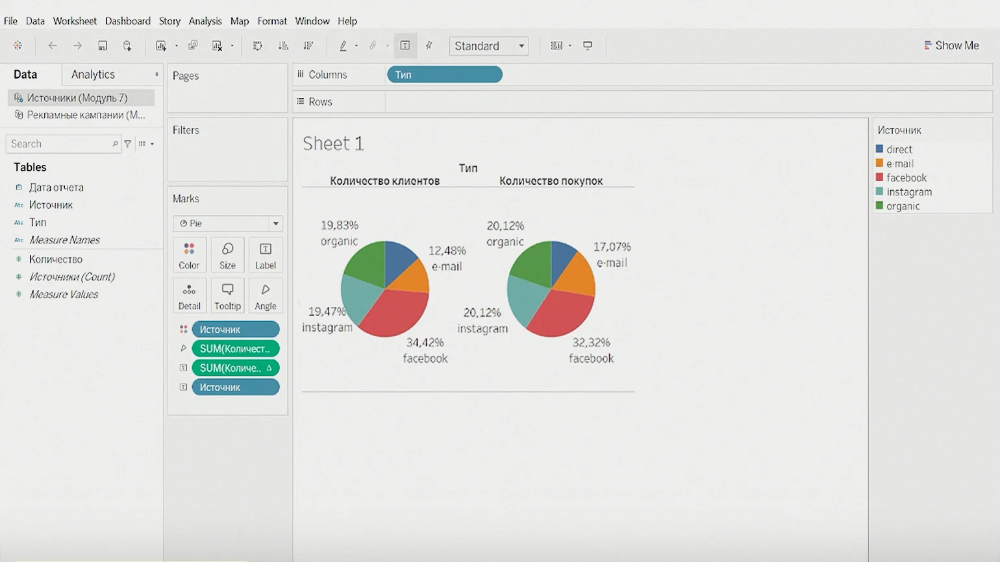
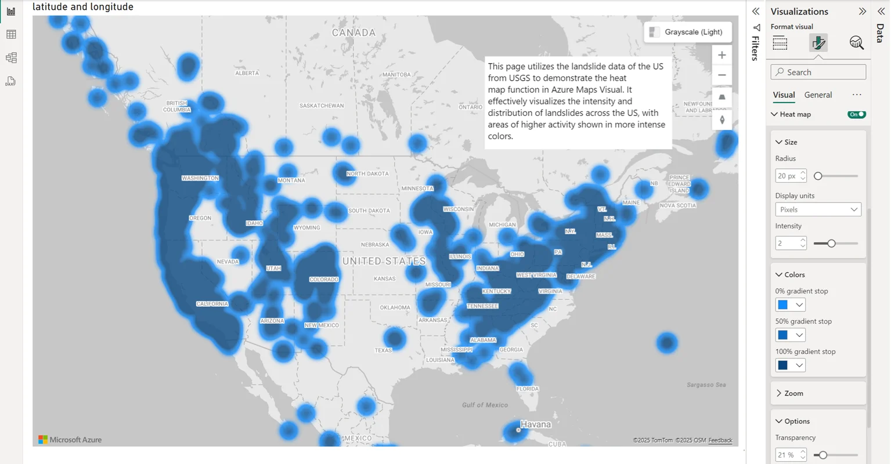

Кто это
Data Analyst — это человек, который ищет смысл в данных. Он берёт
кучу цифр, таблиц и фактов и превращает их в понятные истории: что
работает, что нет и что делать дальше. Это как детектив, только
вместо улик — графики и отчёты.
Дата-аналитик — это специалист, который анализирует данные
компании, сферу её работы и рынка в целом, чтобы использовать их
для принятия решений. Каждый день он изучает информацию о
предпочтениях клиентов, рассчитывает метрики работы компании,
формулирует и проверяет гипотезы. Всё это нужно, чтобы получить
так называемые
actionable insights
— выводы, на основе которых бизнес сможет принять правильное
решение и улучшить продукт.
На практике это выглядит так. Допустим, компании нужно
распределить бюджет между двумя продуктами: увеличить инвестиции в
один — закупить рекламу, увеличить производство — и сократить
вложения в другой. Как понять, какой из них принесёт большую
прибыль?
Интуитивно кажется, что нужно вкладываться в продукт, который
больше покупают. Но не всё так просто. Спрос может быть
волнообразным: расти, а потом падать. Данные о продажах и
состоянии рынка часто распределены по разным системам:
CRM, сервисам для управления заказами, рекламой и маркетинговыми
коммуникациями.
На первый взгляд, аналитик похож на оператора прибора. Его главная
задача — снимать объективные показания и передавать их
руководителям для принятия решений. Но, в отличие от оператора,
аналитик делает это не механически, а вдумчиво, чётко понимая, для
чего это нужно и как данные помогут бизнесу.
Очень важно правильно визуализировать информацию, чтобы, глядя на
график, можно легко принять решение: развивать направление,
сфокусироваться на продукте, закрыть отделение или готовиться к
кризису.
У этой профессии много сфер применения, а у специалистов — много
возможностей для роста и развития. Если аналитик умеет работать с
базами данных и инструментами визуализации, по уровню зарплаты его
можно поставить на пол ступени ниже разработчика. А если знает
Python
и умеет работать с моделями — возможно, даже на ступень выше.
При этом для работы с основными задачами не обязательно глубоко
погружаться в программирование и работу с моделями. В отличие от
дата-сайентиста, для аналитика данных работа с моделями — не
обязанность, а приятная опция. Хотя многие этой опцией пользуются.
Сейчас очень много готовых
библиотек для моделей, поэтому
машинное обучение
постепенно используется даже в рутинных задачах: классификации,
А/В тестах, прогнозировании. Поэтому развиваться и строить карьеру можно в
любом направлении.
Что делает Data Analyst
Data Analyst — это спец, который умеет копаться в данных и
находить там ответы. Он не строит системы (это для Data
Engineer-ов) и не учит машины думать (привет, Data Scientist-ы), а
смотрит на то, что уже есть, и говорит: "Вот тут мы заработали, а
тут — провал". Представь, что ты помогаешь магазину понять, почему
продажи упали, или сайту — какие товары людям нравятся.
Эти ребята собирают данные из разных мест (например, из продаж или
кликов на сайте), чистят их от мусора и превращают в таблицы,
графики или отчёты. Они подсказывают бизнесу, где можно
сэкономить, а где — вложить больше денег. Например, благодаря
аналитикам Netflix знает, какие сериалы вам предложить, а
маркетологи — на кого таргетировать рекламу. В работе Data Analyst
использует Excel,
SQL
(про него ниже) и штуки вроде
Power BI
или
Tableau, чтобы всё красиво показать.
Data Analyst должен быть любопытным и внимательным. Данные — это
как пазл: нужно собрать картинку и объяснить, что она значит. Это
работа для тех, кто любит разбираться в причинах и следствиях.
Главная задача аналитика данных — объединить имеющиеся данные,
собрать недостающие и интерпретировать полученный массив
информации.
Основные рабочие инструменты аналитика —
Sublime Text,
Jupyter Notebook,
Google Sheets
или Excel. Насчёт последнего: в интернете можно встретить шутки на
тему того, что считать таблицы в Excel «большими данными» уже не
модно.
Это не так: огромное количество компаний по всему миру строят
мощную аналитику на базе таблиц в Excel. Даже несмотря на то, что
в их распоряжении есть самые продвинутые технологии. В первую
очередь потому, что это доступные и простые инструменты, которые
позволяют решать самые сложные задачи. Например, автоматизировать
обработку данных в
сводных таблицах, формировать листы прогноза, чтобы планировать бизнес-процессы,
и даже строить
3D-карты.
Аналитикам данных также приходится писать запросы в базы данных
SQL, чтобы получить точечную информацию о процессах или клиентах.
Ещё нужно работать с
BI-системами
Tableau,
Power BI,
Looker Studio, которые агрегируют данные из различных источников. А иногда
приходится даже программировать на языках
Python,
R
или
Java, чтобы, например, автоматизировать поиск по таблицам,
сегментировать их или выявить закономерности.
Вот конкретный кейс: аналитику нужно преобразовать видеопортал,
такой как YouTube, в стриминговую платформу — площадку для
проведения прямых эфиров. Для этого он:
Собирает информацию, как пользователи взаимодействуют с платформой
— проводит исследования, опросы и объединяет полученные данные,
устраняя невалидные и повторяющиеся.
Описывает модели данных и сценарии использования — собирают
фокус-группы, прорабатывают данные и предлагают варианты действий.
Формирует предложения по архитектуре и потокам данных.
Результат работы аналитика — графики, таблицы, данные. То есть
артефакты с готовыми результатами. При этом сами специалисты по
дата-анализу не принимают решения по итогам своей работы. Их
задача — найти лучший способ представления информации, так, чтобы
руководитель, опираясь на него, сам смог быстро принять решение.
Например, результатом работы может быть вот такой график с данными
по выручке и продажам, собранный в
Tableau
— распространённом сервисе визуализации данных:

Приведём другой пример —
тепловую карту. Это такой способ визуализации данных, в котором их значения
отображаются разными цветами. Ниже тепловая карта с данными по
объёму спроса в различных геолокациях, собранная в визуальном
элементе
Azure Maps
для
Power BI:

Где нужен аналитик данных
Аналитик данных нужен фактически любой компании, где принимаются
решения. Дата-аналитики востребованы везде, где есть
диджитал-маркетинг: в ретейле, IT, телекоме, здравоохранении. Такие специалисты
превращают маркетинг в эффективный инструмент — они помогают точно
понять, куда уходят деньги, и получить максимальную прибыль при
минимальных вложениях.
Но есть отрасли и направления, где работа аналитика данных
особенно важна. Например, банки — сфера, где всегда очень много
информации: пользовательские данные, личные и финансовые. При этом
управленческие ошибки в банковском секторе очень дороги. Например,
если создать неправильную
скоринг-модель
— алгоритм, который оценивает, стоит ли выдавать клиенту кредит, —
можно потерять и деньги, и доверие клиентов.
А ещё с помощью аналитики данных можно решать множество задач.
Например, она помогает привлечь и удержать инвестора в стартапе,
показывая перспективы роста и надёжность проекта. Также аналитика
позволяет бороться с кассовыми разрывами, сопоставляя доходы и
расходы компании, чтобы избежать финансовых проблем.
Кроме того, с её помощью можно прогнозировать динамику спроса и
предложения. Это особенно полезно, чтобы точно знать, каких
товаров запасти впрок перед Новым годом или Чёрной пятницей,
избегая переизбытка или нехватки. Ещё одно важное применение —
изучение рынка труда. Аналитика помогает собирать эффективную
команду, например, приглашать только определённых кандидатов на
основе статистики найма и увольнения, что повышает качество
подбора персонала.
Что нужно знать, чтобы стать аналитиком данных
Стать аналитиком можно, даже если всю жизнь до этого вы работали
учёным, журналистом или госслужащим. Специальных талантов для
этого не нужно. Но вот что точно может пригодиться всем новичкам:
Интерес к цифрам и систематизации данных. Без него аналитику может
быть тяжело, ведь ежедневно ему приходится обрабатывать много
разной информации.
Усидчивость. Аналитика — это про спокойствие, внимание и
дотошность. С импульсивным характером и склонностью принимать
спонтанные решения будет сложно.
Аккуратность. Суперсила аналитика данных в том, что он обращает
внимание на неочевидные вещи и видит то, что упускают из внимания
другие.
В чём сложности профессии аналитика данных
Хороший аналитик должен не просто собирать данные, но и понимать,
для чего он это делает. Его работа — поставлять не графики, а то,
что следует за ними.
Инсайты
— вспышки озарения, которые двигают бизнес вперёд. Без инсайтов
графики остаются просто красивыми картинками.
Для того чтобы этому научиться, недостаточно просто пройти курсы.
Нужно наработать опыт, научиться глубоко погружаться в бизнес и
уметь работать с собой — избегать простых обобщений, лёгких
выводов и поверхностных решений. Тогда действительно получится
стать не просто специалистом, а настоящим экспертом: ценным,
конкурентоспособным и востребованным.
Насколько востребованы Data Analyst-ы
Data Analyst-ы нужны всегда, пока есть бизнес. С 2010-х их ценят
за то, что они помогают компаниям зарабатывать больше и тратить
меньше. Любой магазин, банк или сайт хочет знать, что происходит с
их цифрами, — и тут приходит аналитик. Спрос на них стабильно
высокий, особенно в эпоху онлайн-торговли и больших данных. А с
ростом интереса к "умным" решениям эта профессия никуда не
денется.
Чем больше и круче бренд работодателя, тем выше может быть
заработная плата, и если в других сферах это правило не всегда
работает, то в айтишке — это закон. Международные корпорации
обычно предлагают более высокие ставки, в то время как стартапы
привлекают сотрудников бонусами и акциями, обещающими
потенциальную выгоду в будущем.
Уровень дохода также зависит от типа организации. Например,
продуктовые компании, как правило, предлагают более высокую
фиксированную зарплату, но при этом переменные бонусы у них обычно
меньше. Аутсорсинговые компании обеспечивают средний доход, однако
часто добавляют дополнительные плюсы, такие как обучение или
другие бенефиты. Стартапы, в свою очередь, могут быть менее
стабильными в плане дохода, но при этом дают потенциал высокой
доходности, особенно если проект "выстрелит".